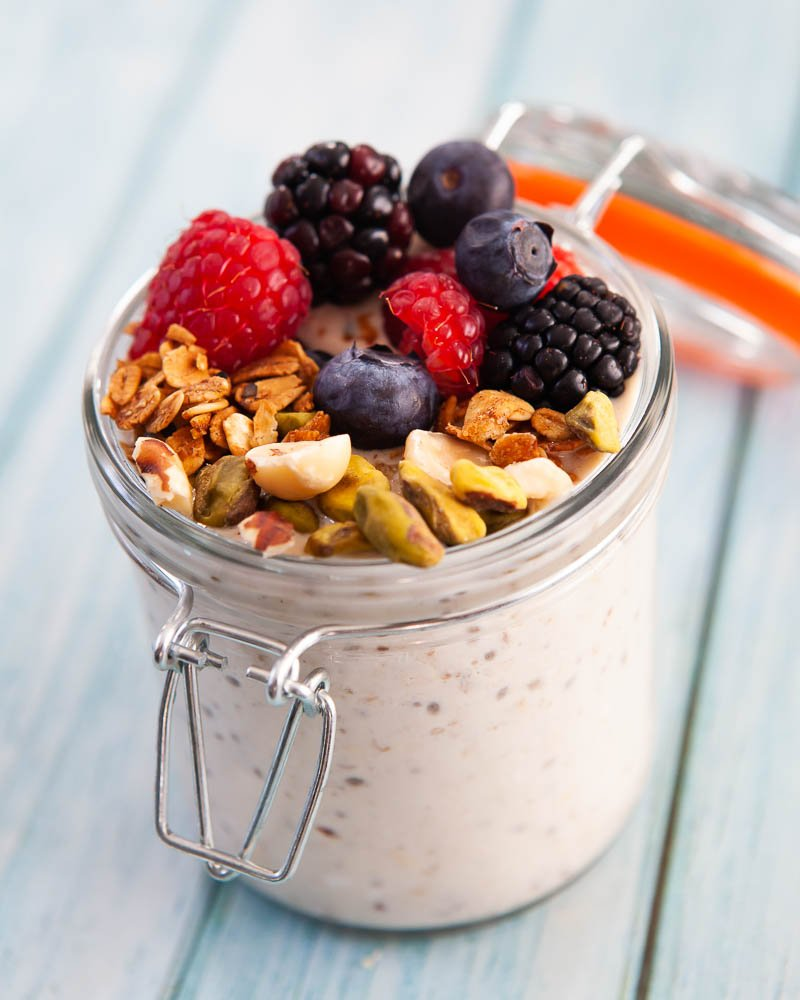

Protein Overnight Oats

Creamy and delicious. Overnight oats are one of the most easily customizable meal prep foods out there. Easily substitute or swap ingredients to change the flavor or consistency of the meal.
Kitchen Supplies Needed
- Mason Jar or food container
- A measuring cup
- A tablespoon measurer
Ingredients Needed
- 1 Cup of Oatmeal
- 2 Cups of Milk
- 1 Tablespoon of Peanut Butter
- Flavored Protein Powder
Preparation Steps
- Grab your mason jar or food container of your choice
- Measure out one cup of the oatmeal of your choice, my preference is old fashioned oats and pour into the container
- Measure two cups of the milk of your choice, can be whole, skim or fat free based on your taste or dietary needs and add it into the container.
- Measure one tablespoon of peanut butter of your choice and add it into the container
- Add one generous scoop of the protein powder of your choice to the container, this adds flavoring and protein to the overnight oats
- Cover the container and shake to mix all the ingredients together
- Allow the oats to sit overnight in the fridge before consumption